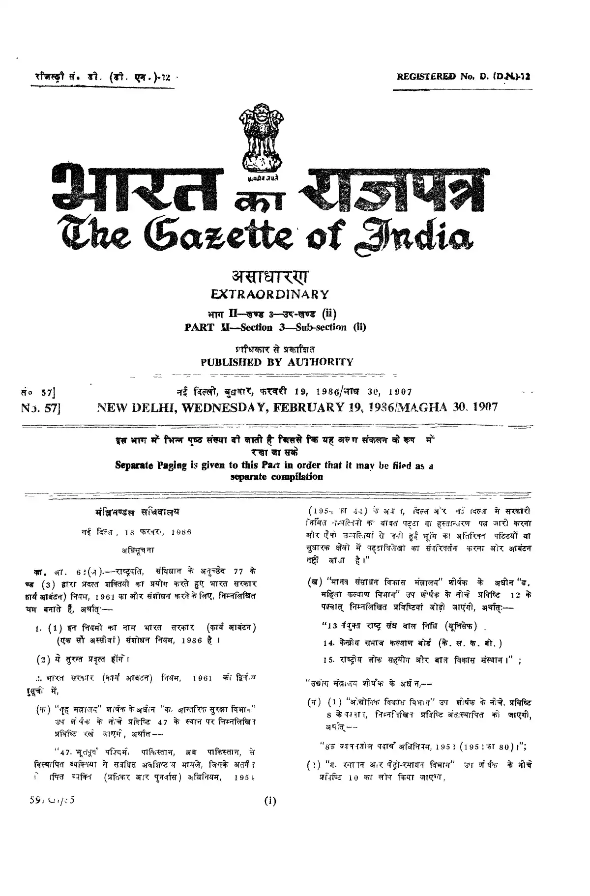
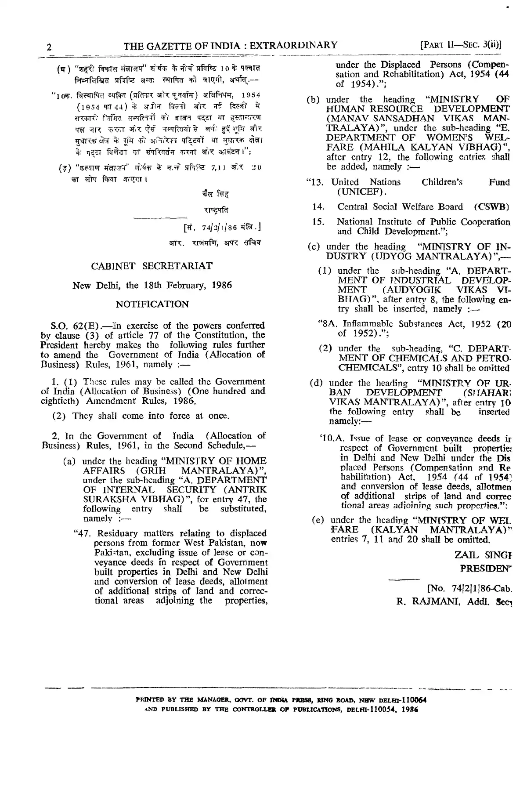

Amendment #180 (S.O. 62(E), 1986)
6 changes: 0 to the First Schedule, 6 to the Second Schedule. 6 applied
The order, page by page
Page 1 of 2

Page 2 of 2

123456Schedule 2 › MINISTRY OF HOME AFFAIRS › DEPARTMENT OF INTERNAL SECURITY › entry 47
- 47. Residuary matters relating to displaced persons from former West Pakistan, now Pakistan, excluding issue of lease or conveyance deeds in respect of Government built properties in Delhi and New Delhi and conversion of lease deeds, allotment of additional strips of land and correctional areas…
applied at schedule 2 › ministry MINISTRY OF HOME AFFAIRS › department A › group_heading III › entry 47 in the Rules after #180
after Schedule 2 › MINISTRY OF HUMAN RESOURCE DEVELOPMENT › DEPARTMENT OF WOMEN'S WELFARE › entry 12
- 13. United Nations Children's Fund (UNICEF).
- 14. Central Social Welfare Board (CSWB)
- 15. National Institute of Public Cooperation and Child Development.
applied at schedule 2 › ministry MINISTRY OF HUMAN RESOURCE DEVELOP- MENT › department E › entry 13 in the Rules after #180
after Schedule 2 › MINISTRY OF INDUSTRY › DEPARTMENT OF INDUSTRIAL DEVELOPMENT › entry 8
- 8A. Inflammable Substances Act, 1952 (20 of 1952).
applied at schedule 2 › ministry MINISTRY OF INDUSTRY › department A › group_heading III › entry 8A in the Rules after #180
Schedule 2 › MINISTRY OF INDUSTRY › DEPARTMENT OF CHEMICALS AND PETRO-CHEMICALS › entry 10
applied at schedule 2 › ministry MINISTRY OF INDUSTRY › department C › entry 10 in the Rules after #180
after Schedule 2 › MINISTRY OF URBAN DEVELOPMENT › entry 10
- 10. A. Issue of lease or conveyance deeds ir respect of Government built properties in Delhi and New Delhi under the Dis placed Persons (Compensation and Re habilitation) Act, 1954 (44 of 1954) and conversion of lease deeds, allotmen of additional strips of land and correc tional areas adjoining such…
applied at schedule 2 › ministry MINISTRY OF URBAN DEVELOPMENT › entry 10 in the Rules after #180
Schedule 2 › MINISTRY OF WELFARE › entry 7; Schedule 2 › MINISTRY OF WELFARE › entry 11; Schedule 2 › MINISTRY OF WELFARE › entry 20
applied at schedule 2 › ministry MINISTRY OF WELFARE › part IV › entry 7 in the Rules after #180
How this document was read
From the Government of India (Allocation of Business) Rules, 1961 and their amendments, as published by the Cabinet Secretariat (cabsec.gov.in), read by orgpedia. The readings of the older scanned gazettes have known gaps.